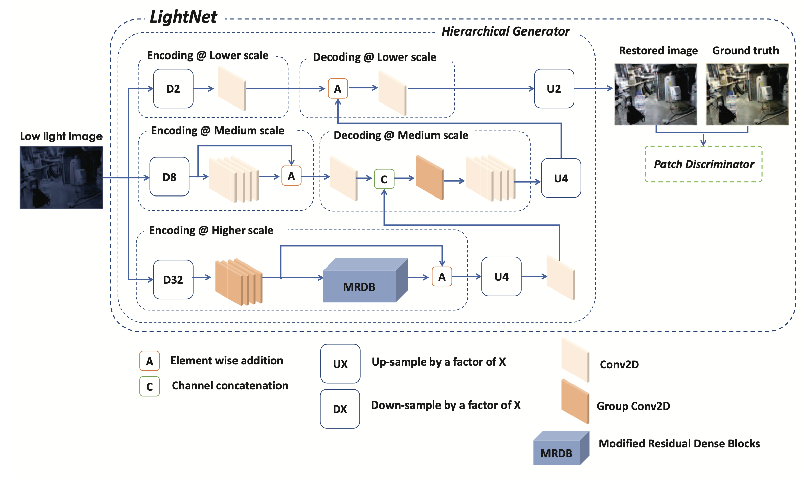
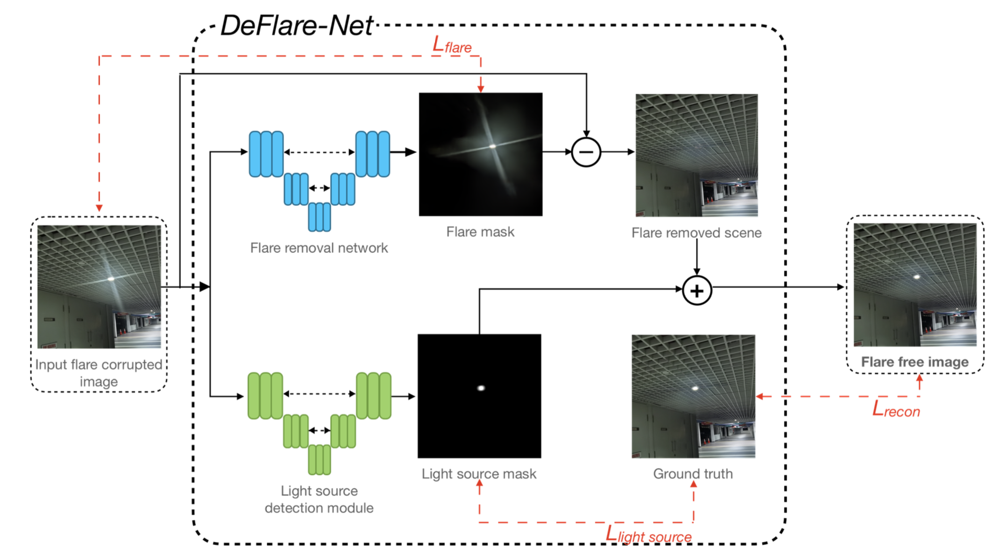

|
Nikhil Akalwadi
I am currently appointed as Research Assistant at Center of Excellence in Visual Intelligence (CEVI) advised by Prof. Uma Mudenagudi and Ramesh Ashok Tabib where I work on development of computer vision algorithms in areas like Low-Level Vision Systems, Underwater Image Restoration and Enhancement.
I completed my Bachelors in Electronics and Communication from KLE Technological University, Hubballi. I majorly worked on Low-Level Vision Systems and published on the area, advised by Prof Uma Mudenagudi, Prof. Ujwala Patil and Ramesh Ashok Tabib.


|

|
|
Research Interests
My primary research area is Computer Vision (Underwater Image Restoration and Enhancement, Low-Level Vision, Multispectral Image Analysis).
Recent Updates !!!
- November 2023: Our work on Flare Detection and Removal in Images got Accepted in PReMI 2023 with paper title DeFlare-Net: Flare Detection and Removal Network.
- October 2023: Our work on Low-Light Image Enhancement got Accepted in WiCV Workshop @ ICCV 2023 with paper title LightNet: Generative Model for Enhancement of Low-Light Images.
- March 2023: We achieved 8th rank globally in MIPI Challenge @ CVPR 2023.
- July 2023: We published a joint report on flare detection and removal in MIPI Challenge @ CVPR 2023 with report title MIPI 2023 Challenge on Nighttime Flare Removal: Methods and Results.
- April 2022: We achieved 13th rank globally in NTIRE Challenge @ CVPR 2022.
- July 2022: We published a joint report on night photography rendering in NTIRE Challenge @ CVPR 2022 with report title NTIRE 2022 Challenge on Night Photography Rendering.
Selected Works
|
|

|
LightNet: Generative Model for Enhancement of Low-Light Images
Chaitra Desai, Nikhil Akalwadi, Amogh Joshi, Sampada Malagi, Chinmayee Mandi, Ramesh Ashok Tabib, Ujwala Patil, Uma Mudenagudi
Women in Computer Vision (WiCV), ICCV 2023.
|
|
|
MIPI 2023 Challenge on Nighttime Flare Removal: Methods and Results
... Nikhil Akalwadi, Ankit Raichur, Vinod Patil, Allabakash G, Swaroop A, Amogh Joshi, Chaitra Desai, Ramesh Ashok Tabib, Ujwala Patil, Uma Mudenagudi ...
Mobile Intelligent Photography & Imaging (MIPI), CVPR 2023.
|
|

|
DeFlare-Net: Flare Detection and Removal Network
Allabakash Ghodesawar, Vinod Patil, Ankit Raichur, Swaroop Adrashyappanamath, Sampada Malagi, Nikhil Akalwadi, Chaitra Desai, Ramesh Ashok Tabib, Ujwala Patil & Uma Mudenagudi
Pattern Recognition and Marchine Intelligence PReMI 2023
|

|
NTIRE 2022 Challenge on Night Photography Rendering
Chaitra Desai, Nikhil Akalwadi, Amogh Joshi, Chinmayee Mandi, Sampada Malagi, Akash Uppin, Sai Sudheer Reddy, Ramesh Ashok Tabib, Ujwala Patil, Uma Mudenagudi
New Trends in Image Restoration and Enhancement (NTIRE), CVPR 2022
|
[Source Code]
|